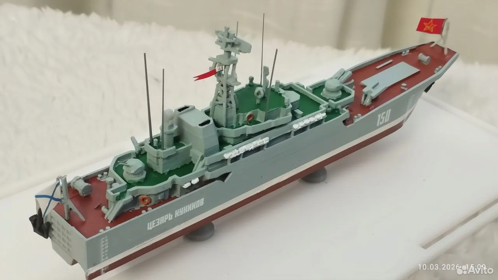
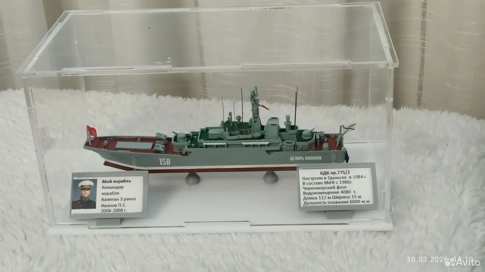

Напечатано в 3D
Детали модели подготавливаются под конкретный проект корабля.

Персональные модели кораблей ВМФ
Точная миниатюра конкретного борта с ручной окраской, вашей фотографией и годами службы. Подарок, который не приходится объяснять моряку.
Не сувенир. Личная история.
Модель создаётся по реальному кораблю: корпус, надстройки, вооружение, мачты и флаги передаются настолько подробно, насколько позволяет масштаб.
На подставке — сменная карточка «Мой корабль»: фотография, звание, должность и годы службы. Именно она превращает макет в личную вещь.

Персональная карточка входит в композициюДетали модели подготавливаются под конкретный проект корабля.
Палубы, корпус, флаги и мелкие элементы собираются в мастерской.
Прозрачный акриловый короб 20 × 10 × 10 см защищает от пыли.
Компактный формат для книжной полки, кабинета или домашней коллекции.
БДК «Цезарь Куников»
Проект 775/2 · Черноморский флот
Модель 170 × 25 × 55 мм
Нажмите на фотографию, чтобы рассмотреть крупнее
Как появляется модель
Проект, название, бортовой номер и годы службы. Если знаете не всё — разберёмся по имеющимся данным.
Проверяем, готова ли 3D-модель проекта, уточняем персональную карточку, стоимость и срок.
Модель печатается, собирается и окрашивается вручную. Перед отправкой вы получите фотографии.
Композиция в акриловом боксе упаковывается в картонную коробку. Доставка оформляется через Авито.
Начнём с одного названия
Напишите название в сообщении. Алексей проверит возможность изготовления и ответит по срокам и стоимости.
Базовая модель БДК пр. 775/2
от 10 000 ₽Для служивших на этом корабле в объявлении указана скидка 2 000 ₽.Написать Алексею на Авито ↗Без предоплаты на сайте. Все детали заказа — напрямую с мастером.